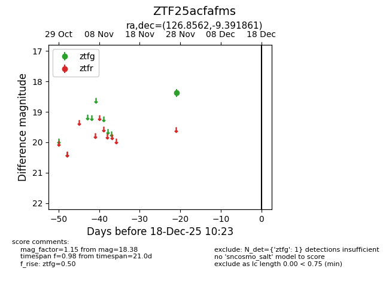
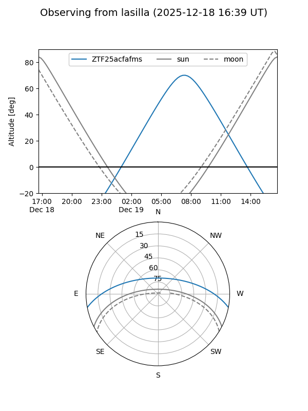
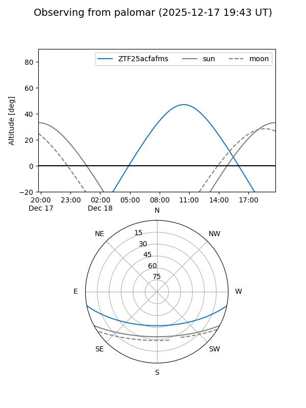

ZTF25acfafms
Target ZTF25acfafms at 2025-12-18 11:17
Aliases and brokers:
FINK: fink-portal.org/ZTF25acfafms
Lasair: lasair-ztf.lsst.ac.uk/objects/ZTF25acfafms
ALeRCE: alerce.online/object/ZTF25acfafms
alt names
ZTF25acfafms (ztf,fink_ztf)
Coordinates:
equatorial (ra, dec) = 126.8562,-9.39186
equatorial (HMS+DMS) = 08:27:25.48,-09:23:30.70
galactic (l, b) = (232.9395,+16.42034)
Photometry
last ztfg=18.38
1 ztfg detections
Lightcurve

Visibility


Additional plots